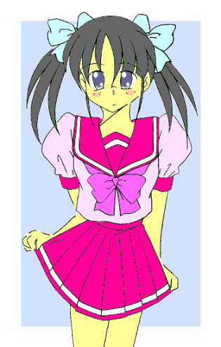

戻る
｢ライトニングスマッシュ！！｣
俺は長い髪をなびかせながら光の塊を放った。
光に包まれた目の前の魔獣は、もがきながらその姿を消した。
ホッとしたのも束の間、そばにいた青いコスチュームの少女＝ミラージュブルーが叫ぶ！！
｢ホワイト危ないっ！！ 後ろ！！｣
その言葉に俺はとっさに左側へジャンプして避けた！！ するとその直後、俺のいた場所に炎の塊が通過した！！
｢チッ、もう少しのところを……｣
声とともに現われたのは一人の魔人だった。
今まで倒した魔人に比べると比較的小柄だけど、その分スピードはありそうだった。
｢こうなったらお前だけでも倒してやる｣
そう言って魔人は俺に襲いかかってきた。
赤いコスチュームの少女＝ミラージュレッドが間に入って薙刀を振るうが、魔人はその攻撃をかわしてこちらに迫ってくる。
｢プラグイン！！｣
俺は左手に篭手を出現させ、魔人の攻撃を何とかしのいだ……が、それもそう長くは保ちそうにない。
ブルーとレッドからも引き離されてしまった……
そして魔人の身体から、いくもの炎の塊が俺に向けて発射された。
｢くそっ！！ ……ええいっ！！ ブーストアクセラレート！！｣
追い詰められた俺は篭手から棒状の物体を引き抜き剣を形成すると、止むを得ず「切り札」であるスピード＆パワーアップのキーワードを唱えた。
すると俺のコスチュームが輝き始め、俺の時間が加速された分、周囲の動きが遅くなったように感じた。
俺は炎の塊を避けながら魔人に近づき、力を上乗せして輝く剣を振り下ろした！！
｢閃光・輝雷斬！！｣
｢グァァァァ……｣
魔人は断末魔の叫びを上げながら光に包まれ……消えていった。
戦いには勝ったものの、俺の心は暗かった。
｢あーあ、結局使っちまったのか……｣
ため息混じりのレッドの声に俺は振り向いた。
｢……しかたないよ。使わなければこっちがやられていたからな｣
レッドは力なくそう答える俺の肩を叩いて、｢タイムリミットが近いしそろそろ戻ろうぜ｣
と言った。
｢｢｢ディスチャージ｣｣｣
変身解除のキーワードを唱えると、俺たち三人の身体は光に包まれた。
そして光が消えると、ブルーとレッドの立っていた位置には女の子ではなく男の子が立っていた。
そして俺は変身前と同じ、胸が少し膨らんだ夏用のブラウスに膝丈のスカートを履いた｢女の子｣の姿に戻った。
｢はーっ、今日使わずにすめば明日は『男』に戻るはずだったんだけどなあ……｣
｢だけどどうするんだ？ 明後日からは新学期だぞ……やっぱり『あれ』をやるのか？｣
レッドだった少年、礼戸に言われて俺はますます落ち込んでしまった。
……そう、まさにそれが｢大問題｣なのだった。
変身美少女戦士ミラージュガール
第七話：衝撃（笑撃？）デビュー！？ 転校生三代真奈美！！
作：ライターマン
俺の名前は三代武士（みしろ･たけし）。もうすぐ１４歳になる私立津留木（つるぎ）学園の中学二年生である。
え？ 男みたいな名前だって？ ……当たり前だっ！！ なぜなら俺は正真正銘、生まれたときからずっと男だからだっ！！
……だがその俺に今、最大の危機が訪れようとしていた。
｢嫌だ！！ ……絶対に嫌だ〜っ！！｣
俺はトイレに鍵をかけて、立て籠もっていた。
｢いい加減にしなさい！！ 明日から新学期なのよっ。……時間がないから早く出てきなさいっ！！｣
ドアの向こうから母さんの怒鳴り声が聞こえる。カチャカチャという音がして、錠前のツマミがくるりと回った。
（しまったああっ！！ ここの鍵、ドライバーかコインがあれば外から回せるんだったっ！！）
慌ててノブを引っ張り再び鍵をかけようとしたけれど、時既に遅く……俺は母さんにトイレから引きずり出された。
｢往生際が悪いわね。細かいところを直さなきゃならないんだから、とにかくこれ着なさいっ！！｣
そう言って母さんは、俺の目の前にセーラー服をグイッと突き出した。
男である筈の俺が、何でセーラー服を着せられようとしているのか？
それは今の俺の見た目が女の子だからである。
つぶらな瞳、艶やかで長い髪を左右に分けてリボンで結び、胸には二つの膨らみ、細くなったウエストと少し大きなヒップが身体のラインを魅力的に描いている……
誰もこんな俺を見て「男だ」と思う奴はいないだろう。１０人中８人くらいは美少女だと言うんじゃないだろうか？ ……言われても全然嬉しくないけど。
どうしてこんな事になったのか？ ……それにはちょっとした（？）訳がある。
実は……俺、そして俺と同じクラスの古木祐一（ふるき･ゆういち）と、近くの公立中学に通う礼戸一明（れいと･かずあき）は、邪霊界からやってくる魔物と戦うための正義の美少女戦士ミラージュガールなのだ。
男なのになんで美少女戦士なのかって？ 俺だってなりたくてなった訳じゃないっ！！ ブローチが｢誤って｣俺をレジストしてしまったためにこうなったんだっ！！
そもそもこのブローチは、２０年以上前に母さんたちが使っていた物で、その後は力を封じられてただの記念品になっている筈だった。
だが、母さんたちが封じた邪霊界とこの世界をつなぐ扉が再び開き、しかも邪霊界の連中は、ブローチを作り出した精霊界とこの世界との間に結界を張ったのである。
そのため邪霊界からの侵攻を阻止するために新たなブローチを持ってこの世界に来ようとしたペルこと妖精ペルティノは、結界のためにダメージを受けてしまった。
ペル自身は何とか無事だったものの、持ってきたブローチは砕けてしまった。
そこで母さんたちが持っていたブローチの力を復活させることにしたのだが……そのブローチは、偶然変身のキーワードを唱えた俺を適格者として｢レジスト｣してしまったのだ。
そのために俺は、白き光の美少女戦士ミラージュホワイトになってしまった。
そして同じように青き水の戦士ミラージュブルーになった古木と、赤き炎の戦士ミラージュレッドとなった礼戸とともに、俺は魔獣や魔人と戦うことになったのだ。
ブローチの力は、ミラージュガールに変身するときに俺たちの身体を「女の子」に作り変えている。
だから変身して人前に出るときは、女の子のふりをしなければならず……これが結構恥ずかしかったりするのだ。
それでも古木と礼戸の場合、変身を解除すると即座に男に戻れるので、まだましな方だろう（礼戸の奴は普段でも時々女装するから、むしろ喜んでるかも知れんが……）。
だが俺の場合、変身を解除しても元に戻るのは服だけで、体の方はしばらく女の子のままなのだ。
そのため変身解除直後は、｢男の子の（学生）服を着た女の子｣状態になるので、いつも人目につかないところで女の子の服に着替えないといけなかった。
そしてそのあとも女の子としてふるまわなければならず、さらに恥ずかしい思いをしていたのだが……それでも１０時間後にはちゃんと男に戻っていた。だから、例えば夕方に変身しても翌日の朝には男の姿に戻っており、俺はいつもどおりに｢男子中学生・三代武士｣として学校に通うことが出来たのだ。
……夏休み前までは。
状況が変わったのは、夏休みに入ってからすぐの事だった。
俺たちの前に魔獣を操る｢魔人｣が姿を現したのだ。
魔人はスピードもパワーも俺たちを遥かに上回り、俺たちは魔人に対抗するためミラージュガールの力を強化し、武器を装備した。
さらに俺の場合は強化した力を集約して一気に発動することで、短時間ではあるがパワー４倍スピード３倍の力を発揮して魔人を倒すことが出来るようになった。
……だが、その代償も大きかった。何と変身後に女の子でいる時間がパワーの４倍、さらにスピードの３倍を掛けた分だけ長くなり１２０時間、つまり５日間になってしまったのだ。
５日間も元に戻れないということは、その間は変身できないのじゃないか――と思ったのだが、試しに変身してみたらこれが変身できたのである。
もちろんスピード&パワーアップも使えた。
だけど……それをやると、その時点からまた５日間「女の子のまま」状態が継続されてしまった。
８月も半ばになってくると、魔獣や魔人も間を置かずに現われるようになり、そのたびに俺たちは変身し、俺は強化された力を使い続けた。
そしていつの間にか、俺は男の身体でいるより女の身体でいる時間の方が長くなっていた。
……で、話は１０日前――つまり８月２１日に遡る。
｢えーっ！？ 女の子として転入するぅーっ！？｣
俺は驚愕のあまり、思わず大声で叫んでしまった。
家の居間で俺と古木、そして古木の母親である美鈴さんを前に、母さんが話を続けた。
｢……そんなに騒がないで。だってお前の身体は今女の子なんだから、そのまま『武士』として学校に行くわけにはいかないでしょう？｣
平然とそんなことを言ってのけながら、麦茶に口をつける。
｢で、でもあと３日経てば男に戻るんだし……｣
｢このまま何事もなく『力』を使わなければね。……最後に男だったのは何日前？｣
｢……１０日前｣
｢８月の初めに最初の魔人を倒してから、今まで何日間男だった？｣
｢…………３日｣
｢正確には２日半よ。１回は男に戻った日の夕方に『力』を使ったんだから｣
｢ううう……っ｣
｢とにかく現状では男の子ではなく女の子として学校に通う方が都合がいいのよ。古木君には真奈美の友人として、学校でのサポートをお願いしたいの｣
母さんの言葉に古木が力強く頷く。……こらこらっ、そこで同意なんかするんじゃないっ！！
｢そ……それじゃあ俺が男に戻った時はどうするんだよ！？｣
俺はなおも抵抗した。
｢その時は……｣
｢その時は？｣
｢女装すればいいのよ｣｢いやだあぁぁぁ――――っ！！｣
すったもんだの挙句、俺は母さんと一つの「賭け」をすることになった。
すなわち、｢１０日間、９月になるまでの間に一度も男に戻れなければ、女の子として学校に通う｣というものだった。
……そして昨日、マジック１（１回でも使うと負け確定）の状態で俺は力を使ってしまい、『三代真奈美』の転入が決定したのである。

｢ううっ……とうとう……着てしまった｣
鏡に写る自分の姿に、俺は思わず涙を流した。
赤い色のセーラー服――夏服なので袖が短いのは分かるが、何でスカートまでこんなに短いんだ？
……まあ、夏休み前はこの服を着て目の前を歩く女の子を見て喜んでいたのだが、まさか自分が着る事になるとは……
母さんが道具を取りに行ってる間、俺はもう一度鏡に写ってる自分の姿を見た。
少し膨らんでパフスリーブになってる肩から胸の部分まで襟が広がっており、胸元ではリボンが可愛く結ばれている。
そしてプリーツのミニスカートからは、白い脚がすらりと伸びている。
確かに可愛い……可愛いのだが、これが自分だと思うと悲しくなってくる。
（前に古木が女の子になったとき、「この制服を着てみたい」って思ったとか言ってたけど……俺もそう思うようになるのかな？）
そんなことを考えながら、俺はスカートの端をつまんでみた。
（……ううぅ、まるっきり女の子だ。しかめっ面なのが玉に傷だが――）
そう思って俺は試しに笑ってみる……が、その笑みは引きつっていた。
続いて怒った顔、拗ねた顔などいろんな表情をして、最後に膨れっ面をしたところで俺は思わず笑い出した。
｢ハハハハハ……何やってんだかなあ。まったくこんなに可愛いのに、自分では手が出せないってのが惜しいよな｣
などと言いながら、背中の方を確認するためにクルッと身体を回転させると、スカートの裾がフワリとひるがえった。
｢きゃっ♪｣
｢……何してるの？｣｢うわあぁぁぁ――っ！！ か、か、母さん！！ い……いつからそこに！？｣
｢お前が百面相をしていたときから。……なんかお前、最近女の子に馴染んできてない？｣
｢そ、そ、そんな事ある訳ないだろっ！！ か、母さんが戻ってこないから待ちくたびれていただけさ。……ちょ、ちょっとトイレへ行ってくる｣
慌てた俺はうろたえながらそう言って、赤くなっているだろう顔を見せないために部屋をそそくさとあとにした。
そうさ、俺が女の子に馴染むなんてありえない。
さっき｢女の子も悪くないかな｣なんて思ったのも、絶対気の迷いに決まってる……
始業式前のホームルームで、俺は教壇の横に立って担任の先生からみんなに紹介されていた。
｢えー、三代真奈美ちゃんはこのクラスにいた武士君の双子の妹だそうですが、諸般の事情で遠縁の親戚の養子として別々に暮らしていたそうです。その親戚がしばらく海外で仕事をされることになり、その間ご両親と一緒に暮らすことにしてこの学校に転校する事になりました。……それじゃあ真奈美ちゃん、挨拶してくれる？｣
｢はい……え、えーっと、三代真奈美です。短い間だとは思いますが、どうぞよろしくお願いします｣
そう言ってぺこりとお辞儀をして顔を上げると、男子の間から｢おおーっ｣という声が聞こえた。
｢それじゃあ真奈美ちゃん、あそこの武士君がいた席に座ってもらえるかしら？｣
先生の言葉に俺は頷き、みんなの注目を浴びながら本来の俺の席へ歩いていき椅子に座った。
結局俺は、俺――三代武士の「双子の妹」として学校に通うことになった。
最初は従姉妹か遠縁の親戚の子という設定だったのだが、母さんに｢じゃあこれからよろしくね、おばさん｣と言ったら頭を殴られ、そのあと今の設定に変更されたのだ。
転校前の成績とか経歴とかは、市役所の総務課長である父さんと学園の理事長に頼んで問題が出ないようにしたらしいけど……詳しい事は分からない。
ちなみに俺自身の方は、｢結核を患って転地療養のために山奥にいる別の親戚に預けられることになった｣という設定である。
……「結核」とか「転地療養」とか、いつの話だ一体？
担任の先生からいくつかの連絡事項が伝えられた後、休み時間になり、俺はまわりを囲まれて色々と質問を受けた。
この辺は１学期に俺が転校してきた時と同じだが、今回はどちらかというと女子の方が多かった。
｢どこから来たの？｣ ｢両親やお兄さんと離れて暮らして寂しくなかった？｣
などの質問には、｢以前は隣町に住んでいたので時々は会っていた。養父母には子供がいないのでずいぶん優しくしてくれた｣という、予め用意しておいたシナリオを答えた。
｢好きな男のタイプは？｣ ｢音楽はどんなジャンルが好み？｣
｢今度の休みに映画見に行かない？｣ ｢いや、一緒に遊園地に行こうよ｣
という男どもの質問（？）には、苦笑いをしながら適当にごまかしておいた。
まったく男って奴は…………って、俺も男なんだけど。
｢……ふうっ｣
みんなからの質問攻めからようやく開放され、俺は廊下を歩いていた。
まったく……私立学園では転校生は珍しいのだろうが、もう少し穏やかに願いたいものである。
そんな事を考えながら、俺は始業式のある講堂へと移動していた。
転校初日とはいえ勝手知ったる学校の中、俺は迷わず講堂に向かい、その途中トイレに入ったのだが、その瞬間中の空気が凍りついた。
｢……？｣
俺は一瞬何が起こったのか分からなかった。トイレの中の奴らは全員俺の方を見て硬直し、驚愕に目を見開いていた。
何か変なところでもあるのかな？ と思っていたのだが、ちょうどトイレに入っていた古木が慌てて俺をトイレの外に押し出した。
｢み、三代君！！ ……あ、いや三代さん、ここ男子トイレだよ！！｣
言われて俺はようやく気がついた。ここが男子トイレで今の俺が女子中学生だということに……
慌てて俺は女子トイレに飛び込んだのだが、今度はトイレの中の女子の姿に俺の方が硬直することになってしまった。
｢はーっ……あー恥ずかしかった｣
｢うふふふ、真奈美ちゃんって結構あわてんぼさんなのね｣
始業式が終わって学校を出た俺は、思わずため息をつく。隣を歩いていたクラスメイトの米倉さんが笑い声を上げた。
トイレでの一件はクラスはおろか学校中に伝わり、俺は｢おっちょこちょいな転校生｣として知られるようになってしまった。
まあ……迂闊だったのは事実なのだし、｢俺は男だ｣と言うわけにもいかなかったから、反論はしなかったのだが……
｢でも気をつけてね。明日の授業でも同じことすると大変よ｣
｢え？ 明日の授業って？｣
意味が分からず聞き返した俺に、米倉さんは再び笑いながら答えた。
｢……だって明日の体育は水泳よ。真奈美ちゃんが間違えて男子更衣室に入ったりしたら、もっとすごい騒ぎになるわよ｣
｢あっ！！｣
｢じゃああたしはここで失礼するわ。……大丈夫、明日はあたしが間違えないように女子更衣室に連れていってあげるから｣
思わず硬直してしまった俺に手を振りながら、米倉さんは離れていった。
｢……明日……体育……水泳……女子……更衣室…………｣
俺を捜しに来たペルに声をかけられるまで、俺は呆然とその場にずっと立ち尽くしていた。
その日の昼過ぎ、俺と猫の姿のペルは雑木林の中を通る一本道に立っていた。
｢この付近に魔物の気配が……｣ ｢はい｣
ここは大きな森の一部で、今歩いている林道の奥には住宅地が造られている。
このあたりも本当は住宅地になる予定だったけど、土地の取得だとかいろんなことで揉めて、奥の方の住宅地が先に出来たらしい。
住宅地から買い物などで外に出るには大きく迂回する道を使うか、この昔からある車一台通れない幅の林道を使うしかない。
昼でも薄暗い林道は、以前から怪しい連中が出没するという話である。
今日のホームルームでも先生が十分気をつけるように注意していたが、確かに怪しい人間どころか、魔人が出てきてもおかしくない雰囲気である。
｢待たせてごめん｣
俺が到着してしばらくすると古木がやって来た。そしてさらに待つ事１０数分、ようやく礼戸も到着した。
｢ごめんなさい、待った？｣
礼戸の言葉に俺はヒクつくこめかみを抑えながら言った。｢……また女装してきたのか？ お前の趣味も相変わらずだな｣
｢違うわよ。今日は学校が午前中だったから、午後からママの店でバイトをしてたのよ。決して趣味だけじゃないのよ｣
｢じゃあその言葉使いは何だっ！？｣
｢雰囲気の問題よ。あたしって服に流されやすい性格だから｣
｢お前がそんなタマかっ！！｣
｢武士さん！！ それに一明さんっ！！｣
俺と礼戸が掛け合いをしていると、横からペルが怒鳴り声を上げた。
｢そんな事をしてる場合じゃないでしょう。早く行きますよ｣
｢｢へい｣｣
俺たち三人はペルに促されて林道を外れ、林の奥へと足を踏み入れた。
｢結構奥に入り込むなあ。そう言えば確かこの先に防空壕があったんだよな｣
林の中を進みながら礼戸は言った。
｢防空壕？｣
｢６０年位前の戦争のときに作ったやつらしいぜ。中は結構広くて弾薬の保管庫もあったそうだ。ここの造成が遅れたのも、一つはそこの調査やら何やらがあったかららしい｣
｢……ふーん｣
｢お、見えてきた。多分あれだよ｣
そう言って礼戸が目の前を指差した。
そこは少し傾斜のある斜面だった。そして一部が削られており、大きな穴が奥まで続いていた。
｢この奥から気配がします｣
｢どうする？ 中に入るのはかなり危険だと思うけど｣
古木の言葉に俺は頷いた。
｢そうだな……礼戸、この中の構造ってどうなってるのか知ってるか？｣
｢ええっと……確か何年か前の新聞では穴はここ一つで、まっすぐ伸びていて５０メートル先で大きく広がってるって書いてあったと思う｣
礼戸の言葉に俺は少し考え込んだ。
そして髪を束ねていたリボンを解いて二人の方に向いた。
｢そうか、じゃあここから奴等をいぶり出そう。……まずは変身だ｣
俺の言葉に二人は頷き、俺たちはポケットからブローチを取り出した。
｢｢｢ミラージュマジック ･
ミラクルチャージ！！｣｣｣
俺たちが変身のためのキーワードを唱えるとブローチが光り出し、続いて俺たちの衣服が光の粒子に変わっていく。
光の粒子はそれぞれの周囲を回り出し、裸の状態の俺たちは光に包まれた。
古木と礼戸は光の中で体が変わってきている筈である。
髪が少し伸び肌は白く滑らかに変化し、胸が膨らみ腰は大きくウェストは細く、少年の体から少女の身体へと変化していくのだ。
変身前から女の子の身体だった今の俺はそれほど大きな変化はない。ただ少し身体が熱くなるだけである。
そして俺を囲んでいた光の粒子が集まり始める。やがてそれらは光沢のある白い生地で出来た服とミニスカート、手袋、ブーツ、ヘアバンドになって俺の身体を包み、そしてブローチが胸の中心に固定された。
変身を終えたとき、そこに立っていたのは戦うためのコスチュームに身を包んだ三人の少女の姿であった。
｢｢｢プラグイン！！｣｣｣
俺たちが武装のためのキーワードを唱えると、胸のブローチが光を発する。
やがて光はブローチから離れて、ミラージュレッドの右手に薙刀、ミラージュブルーの右手にバトン状の物体、そして俺の左腕には少し変わったデザインの篭手を形成した。
俺とブルーは穴の入り口に、レッドは少し離れた位置に立った。
そして俺は両手を交差させ意識を集中して光の塊を生み出し、それを右手の方に移動させた。
｢ライトニングスマッシュ！！｣
俺は光の塊を穴の中に投げ込み、それが奥の方まで達した頃に集中していた念を開放する。
すると光の塊はそこで弾け、穴の中を震わせた。
続いてブルーがバトンを前に突き出し、地面に対して垂直に立てる。
バトンの両端からは透明な氷のような物体が伸び、やがてそれは大きな弓を形成した。
ブルーは弓の弦を引き絞り、現われた矢を奥にいる魔獣に向かって放った！！
｢氷結・冷極破！！｣
ブルーの放った矢は穴の中を進み、そして四散する。
ガアァァ……
奥の方から魔獣の悲鳴らしきものが聞こえた。恐らく四散した矢の近くにいた魔獣が何匹か巻き込まれて凍りついたのだろう。
穴の奥からいくつもの足音がすごい勢いで近づいてくるのが感じられた。
俺とブルーは穴の入り口から離れ、レッドが少し離れた場所で薙刀を頭の上で回転させる。
すると薙刀の刃の部分から炎が上がり、それはやがて大きな炎の輪になった。
そして穴から出てきた魔獣……そして魔人に向かって薙刀の刃を向けると、炎の輪はその直径を広げながらそちらに向かって飛んでいく。
魔人は素早く離れて炎の輪の外に出るが、他の魔獣たちは全て炎の輪に囲まれた！！
｢紅蓮･炎獄陣！！｣
レッドの言葉とともに魔獣たちは炎に包まれ、全ての炎が消えたとき……魔獣たちの姿は跡形もなかった。
｢チイッ！！｣
魔人は舌打ちをして逃げようとしたが、俺は魔人を追いかけながら篭手から棒状の物体を引き抜き剣を形成した。
｢逃がすか！！ ブーストアクセラレート！！｣
スピード&パワーアップのキーワードを唱えた俺のコスチュームが輝き始める。
３倍にスピードアップした俺は魔人に近づき、パワーアップして刃が光る剣を魔人に振り下ろした！！
｢閃光・輝雷斬！！｣
俺の必殺の一撃を受けた魔人は悲鳴をあげる事も出来ずに光に包まれ……そして消えていった。
｢｢｢ディスチャージ｣｣｣
変身解除のキーワードを唱えて俺たちは元に戻った。
俺はポケットにブローチをしまい、代わりにリボンを取り出すと髪を左右に分けてリボンで結んだ。
｢今回は割と簡単だったな。魔人も大した事なかったし｣
｢しかし今回はあっさりと『力』を使ったけど……良かったのか？｣
｢いいさ。どうせしばらくは『三代真奈美』として学校に行くことになるんだ。男に戻っても女装して行くのなら今の方がましだろう？ ……ちょっとだけだがな｣
そう言って俺は肩を竦めた。
｢きゃあぁぁぁっ！！｣
林の中のもと来た道を戻り、もう少しで林道に辿り着くというところで、俺は女の子の悲鳴を聞いた。
まさか魔獣の生き残りがいたのか？ そう思った俺は他の二人を置いて走り出し、林道に出てから声のする方に向かった。
するとそこにいたのは二人の人物だった。
一人は女の子。俺と同じ制服を着ているが誰かはよく分からない。そしてその顔は恐怖に震えていた。
もう一人は若い男。だが、その目はぎらついていて左手で女の子の腕を掴み、右手にはナイフを持っていた。
どうやらその男は彼女を襲っていたらしい。魔獣や魔人とは関係ないようだが……このまま見過ごすわけにもいかない。
｢その子を放せえぇぇ――っ！！｣
俺はそう叫びながら男に向かってダッシュした。男は飛び込んできた俺に向かってナイフを振りまわすが、俺はそれを難なくかわし、
ゴスッ！！
本気モードで放った俺のハイキックは正確に男のこめかみにヒットし、男はそのまま倒れて気絶した。
俺は震える女の子に手を差し伸べた。
｢大丈夫？｣
すると女の子は勢いよく俺に飛びつき、泣きながら言った。
｢わあぁぁーん、こ、恐かったあぁぁ…………お姉様ぁ｣
｢……お、お姉様ぁ？｣
俺がのした男は警察に引き渡された。
そして俺が不審者を一撃で倒したこの一件は、助けた女の子が同じ学校の生徒で、さらに俺と同じクラスの米倉さんと親しかった事もあり、翌日には学校中に広まっていた。
そのため俺の評価は、｢おっちょこちょいな女の子｣から｢可愛くて凛々しく優しい頼れるお姉様｣へと一変した。
その日の体育の時間、女子更衣室……
｢お姉様っ♪｣｢真奈美お姉様ぁ〜っ｣
｢い、いや、その『お姉様』ってのは……｣
女の子のいる部屋で着替える恥ずかしさもあって、なるべく一人離れたところで着替えたかった俺だったが、逆にクラスの女の子に取り囲まれることになってしまった。
｢お姉さまはまだ着替えないの？｣
｢……い、いや、これから着替えるところだからちょっと離れて……｣
｢でしたらあたしたちが手伝いますわ｣
｢えっ！？ そ、そんなことしなくても……って、わーっ！！ ぬ、脱がさないでーっ！！｣
｢わあ、お姉さまってスタイルいいのね。うらやましいわ｣
｢か、身体に触らないで……だ、誰か助けてくれぇぇぇ――――っ！！｣
女子更衣室に俺の叫びが響きわたった。
……こんな生活、一体いつまで続くのだろう？
（おわり）
おことわり
この物語はフィクションです。劇中に出てくる人物、団体は全て架空の物で実在の物とは何の関係もありません。
あとがき
どうも、ライターマンです。
ミラージュガールも既に第七話、最初の予定よりも話数が長くなってます。このままじゃ２桁いくかも……
今回、武士君はとうとう真奈美ちゃんとして学校に通うことになってしまいます。再び武士君として学校に戻ってくるのはいつの日か？ それとも……？
武士君（真奈美ちゃん）の苦労はまだしばらく続きそうです。（笑）
あと、ラストの女子更衣室のシーンは完全に妄想モードです。実際の女子更衣室でどんな会話がなされているか……覗いた事ないので分かりません。（爆）
さて、物語はいよいよ終盤、ラストに向かって突き進む事になりそうです。
最終回まで後少し、それまでお付き合いいただければ幸いです。
それではまた。
戻る
□ 感想はこちらに □